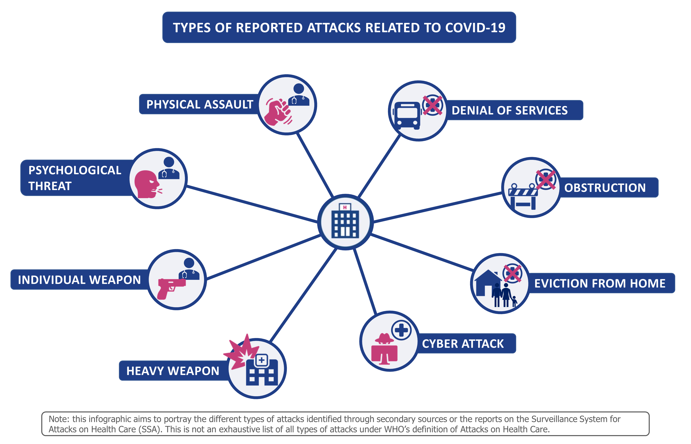
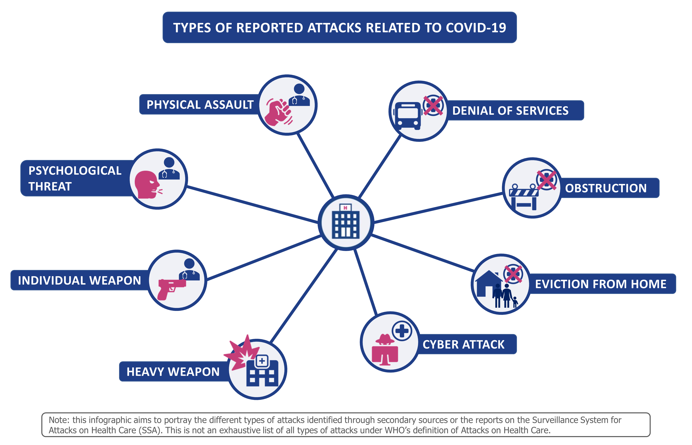

Covid attacks on health care


Since the beginning of the outbreak, health care providers have been shown more support, solidarity and gratitude than they ever have. Yet, attacks on health care have continuously been reported and now also include incidents linked to the COVID-19 pandemic across the world.
Ensuring access to health services is the cornerstone of a successful health response. Any verbal or physical act of violence, obstruction or threat that interferes with the availability, access and delivery of such services is defined as attack on health care by the World Health Organization (WHO).
As shown in the infographic below, the nature of attacks on health care related to COVID-19 varies greatly across contexts and can range from the use of heavy weapons targeting health facilities to the stigmatization of health care workers. Ultimately – whether they take the form of a cyber attack or a physical assault – they deprive people of urgently needed care, endanger health care providers, and undermine health systems.
The role of stigma
Acts of violence related to the COVID-19 pandemic take place against the backdrop of growing social stigma and discriminatory behaviours against anyone perceived to have been in contact with the virus. Health resources, patients, health care providers and their family members are at particularly high risk of experiencing attacks due to the wrongful belief that they have become vectors of contagion in a community.
Responding to attacks
During the pandemic, the international community, governments and civil society have taken the first steps to protect health systems by addressing attacks on health care as well as their roots.
To stop attacks on vital infrastructure such as health facilities and water and sanitation systems, the international community has called for ceasefires in conflict-affected areas. Some national and local governments introduced new policies to protect health care, including in India where perpetrators are punishable with prison terms up to 7 years. In Mexico, some cities have implemented dedicated transport services for health care workers after many were refused entry on public buses.
Doctors’ associations across the world have also initiated talks with authorities to make their work environment safe from infections and to better protect health care providers outside the hospital. Through its Health Care in Danger initiative, the International Committee of the Red Cross published a checklist for a safer COVID-19 response addressed to managers of health-care services, individual practitioners and health policymakers. WHO and partners are also conducting communication and outreach campaigns at country-level to support governments in addressing attacks on health care.
WHO, governments and the international community have also taken measures to address stigma around COVID-19. In addition to regular social media campaigns, the Government of the United Kingdom and WHO launched the collaborative campaign ‘Stop the Spread’ to raise awareness about the dangers of misinformation across Africa, Asia, Europe, the Middle East and Latin America. WHO has also made available a COVID-19 risk communication package for healthcare facilities, as well as dedicated risk communication and community engagement (RCCE) guidance for countries, and a guide for governments, the media and local organization to prevent and address social stigma.
WHO continues to collect information and data to improve our understanding of COVID-19 related attacks, inform its network of partners and document good practices.
During the pandemic, the international community, governments and civil society have taken the first steps to protect health systems by addressing attacks on health care as well as their roots.
To stop attacks on vital infrastructure such as health facilities and water and sanitation systems, the international community has called for ceasefires in conflict-affected areas. Some national and local governments introduced new policies to protect health care, including in India where perpetrators are punishable with prison terms up to 7 years. In Mexico, some cities have implemented dedicated transport services for health care workers after many were refused entry on public buses.
Doctors’ associations across the world have also initiated talks with authorities to make their work environment safe from infections and to better protect health care providers outside the hospital. Through its Health Care in Danger initiative, the International Committee of the Red Cross published a checklist for a safer COVID-19 response addressed to managers of health-care services, individual practitioners and health policymakers. WHO and partners are also conducting communication and outreach campaigns at country-level to support governments in addressing attacks on health care.
WHO, governments and the international community have also taken measures to address stigma around COVID-19. In addition to regular social media campaigns, the Government of the United Kingdom and WHO launched the collaborative campaign ‘Stop the Spread’ to raise awareness about the dangers of misinformation across Africa, Asia, Europe, the Middle East and Latin America. WHO has also made available a COVID-19 risk communication package for healthcare facilities, as well as dedicated risk communication and community engagement (RCCE) guidance for countries, and a guide for governments, the media and local organization to prevent and address social stigma.
WHO continues to collect information and data to improve our understanding of COVID-19 related attacks, inform its network of partners and document good practices.